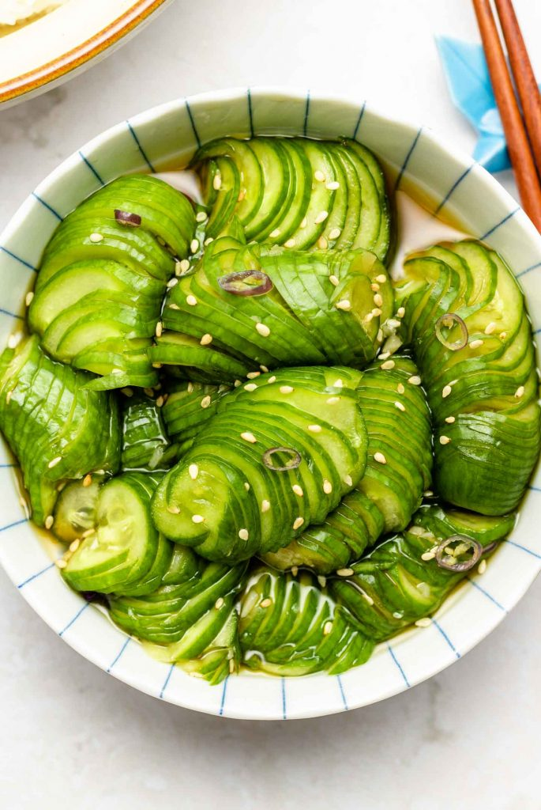

Ooh Yum!
Ponzu Pickled Cucumbers

Description
A refreshing pickled cucumber with notes of citrus and soy.
Ingredients
- 3 Mini Cucumbers (2 Japanese cucumbers)
- 4 tbsp ponzu sauce
- 1 tbsp minced garlic
- 1/2 tbsp sesame seeds, optional
- 1 1/2 cups water
- 1 tsp salt
Steps
- Remove ends of cucumbers.
- Place chopsticks on each side of the cucumbers and make diagonal cuts all the way. Flip and cut in the same direction.
- Slice into bite size pieces.
- Mix salt and water. Add cucumbers and massage the salt water into the cucumbers. Let sit for 5 minutes.
- Mix seasoning into a bag. Remove cucumbers from salt water and squeeze out excess moisture. Add to the seasoning bag and remove air. Seal and allow to pickle in the fridge for at least 10 minutes.
- Add to a bowl and garnish with sesame seeds.